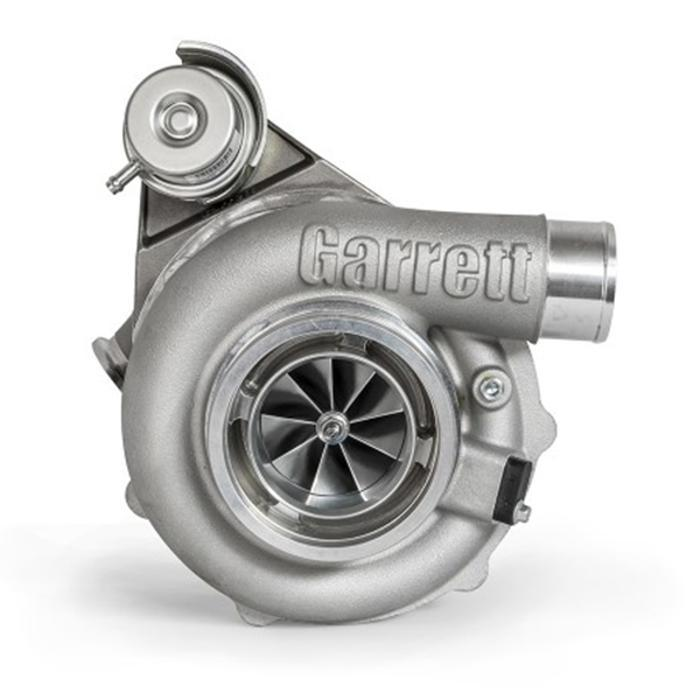
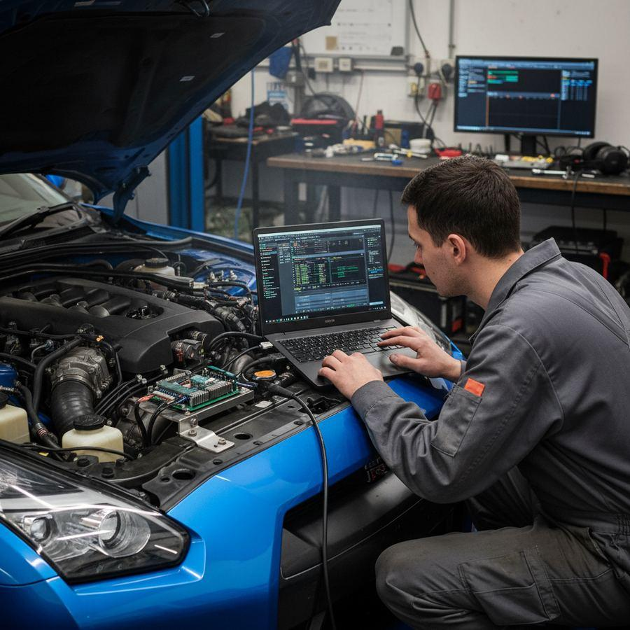
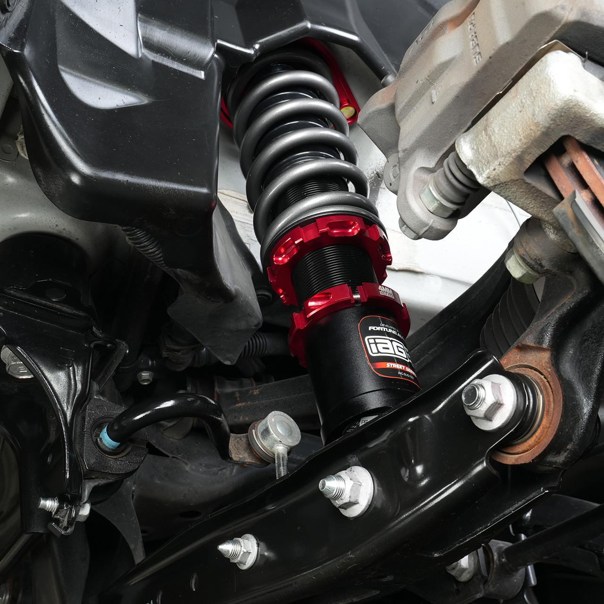
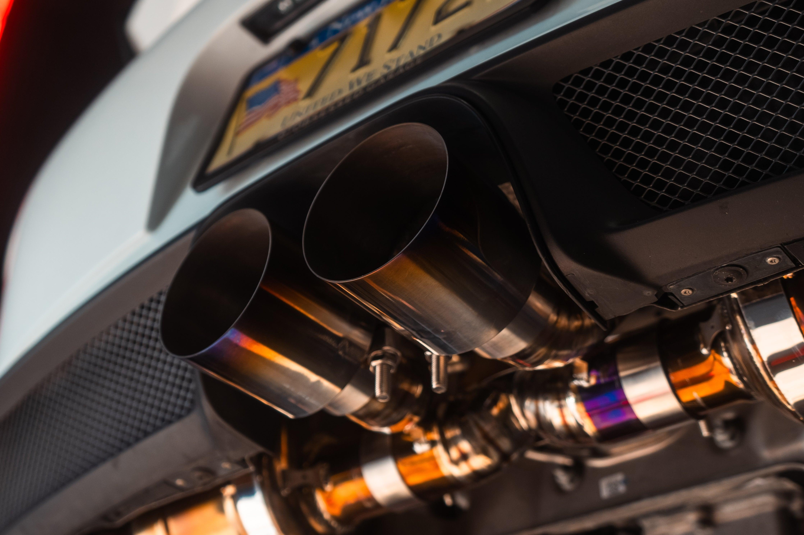
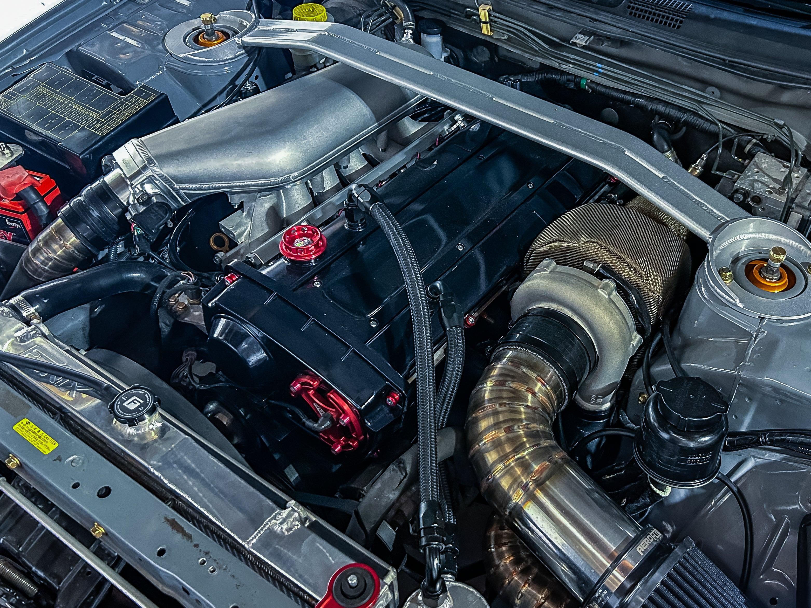
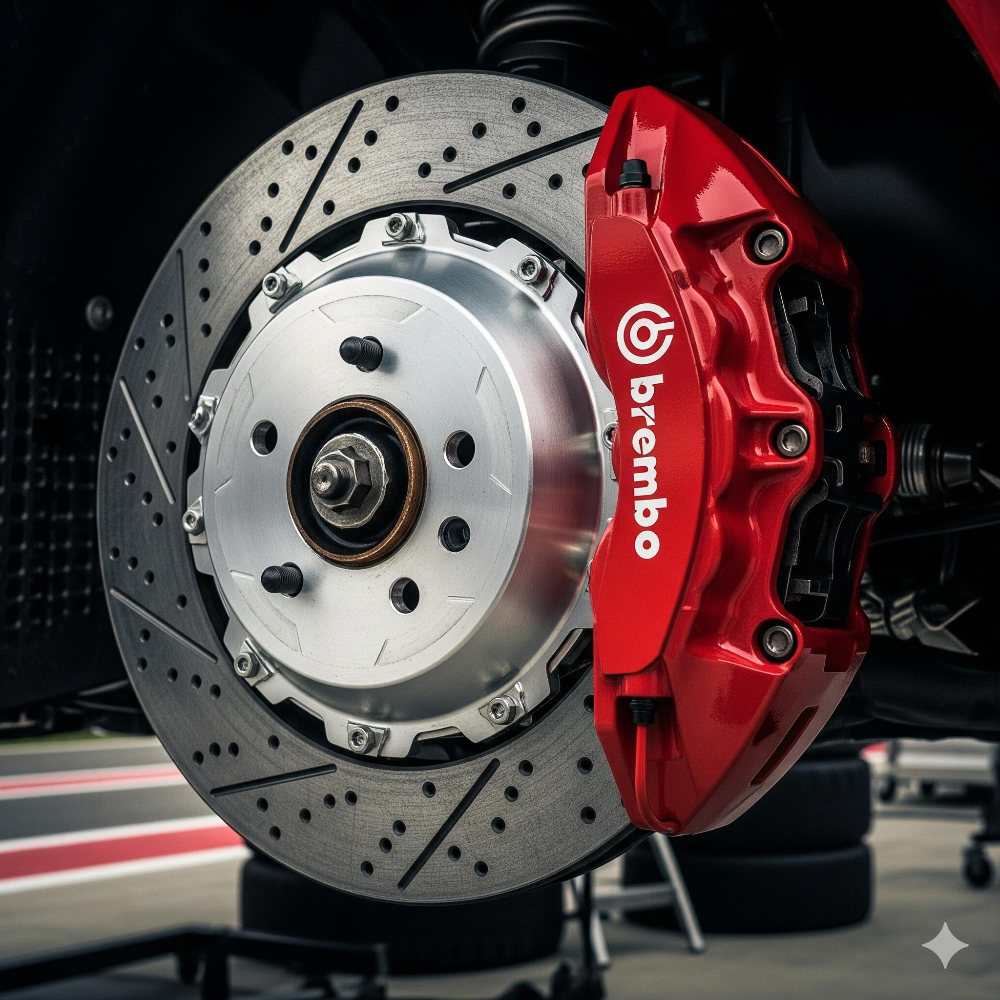

Turbo e Biturbo
O turbocompressor utiliza os gases de escape para movimentar uma turbina que aumenta a quantidade de ar admitida pelo motor.
Conheça a tecnologiaConheça as modificações que transformam carros em máquinas de performance.

O turbocompressor utiliza os gases de escape para movimentar uma turbina que aumenta a quantidade de ar admitida pelo motor.
Conheça a tecnologia
Consiste na alteração dos parâmetros da central eletrônica do motor, buscando ajustar seu funcionamento.
Saiba mais
Modificações na suspensão podem melhorar a estabilidade e o comportamento do veículo.
Conheça a tecnologia
O sistema de escapamento pode ser modificado para alterar o fluxo dos gases e a sonoridade.
Conheça a tecnologia
Envolve modificações em componentes mecânicos para adequar o motor a diferentes objetivos de desempenho.
Conheça a tecnologia
Sistemas dimensionados para oferecer maior capacidade de frenagem e resistência ao uso intenso.
Conheça a tecnologiaAjustes eletrônicos e calibrações, geralmente mantendo os principais componentes originais.
Pode envolver alterações adicionais em componentes de admissão, escapamento e outros sistemas.
Preparação mais abrangente, podendo incluir modificações mecânicas significativas.